Explore Guatemala City
A Brief History
Guatemala City became the national capital in 1773 after earthquakes devastated Antigua, relocating government to a highland valley surrounded by volcanoes. Metropolitan cathedral, National Palace, and Kaminaljuyú Maya mounds record how Spanish colonial administration, nineteenth-century coffee exports, and twentieth-century civil conflict shaped Central America's largest urban population centre.
Attractions Map
Top Sights & Activities
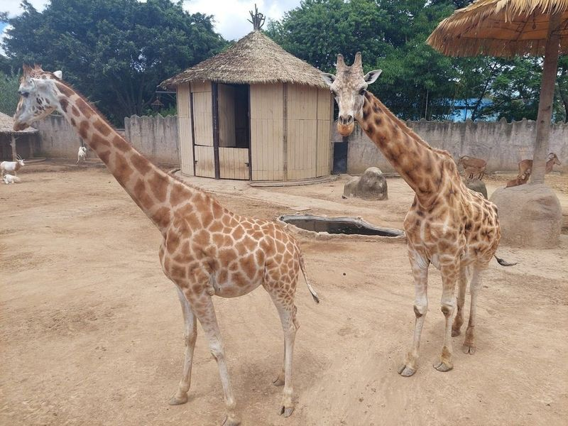
Zoológico La Aurora
Nestled in the heart of Guatemala City, Zoológico La Aurora has been captivating visitors since its establishment in 1924. This enchanting zoo spans 14 acres of lush gardens and is home to over 100 species of both native and exotic animals, making it a paradise for wildlife enthusiasts and families alike. Guests can explore diverse habitats that include the African savanna, Asian subcontinent, Mesoamerican tropics, and even a charming farm area.
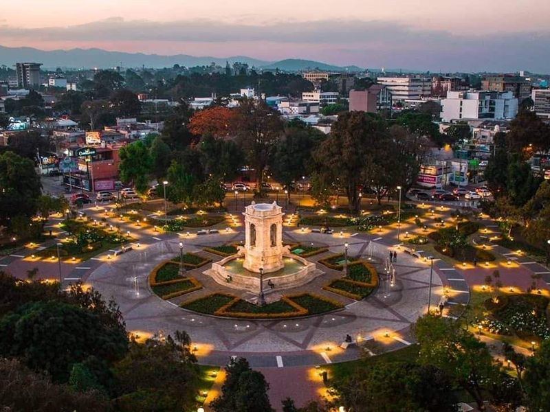
Plaza España
Explore the city of Mixco, Guatemala, and immerse yourself in a diverse shopping experience with Ubuy. This online destination provides access to a wide range of Asian Food Industries products in Mixco and other major cities across Guatemala. With a carefully curated selection of international brands and high-quality global products, Ubuy ensures that conveniently shop for the offerings from around the world without leaving your home.
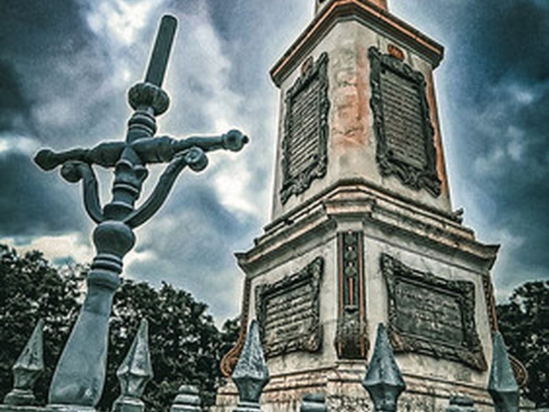
Plaza Obelisco
Plaza del Obelisco in Guatemala City centers on a 19-meter stone obelisk erected in 1935 to commemorate the centenary of Central American independence. The traffic circle and surrounding Reforma Avenue district contain government offices, hotels, and mid-century commercial buildings. The monument is a common orientation point in the capital's Zona 9 civic corridor.
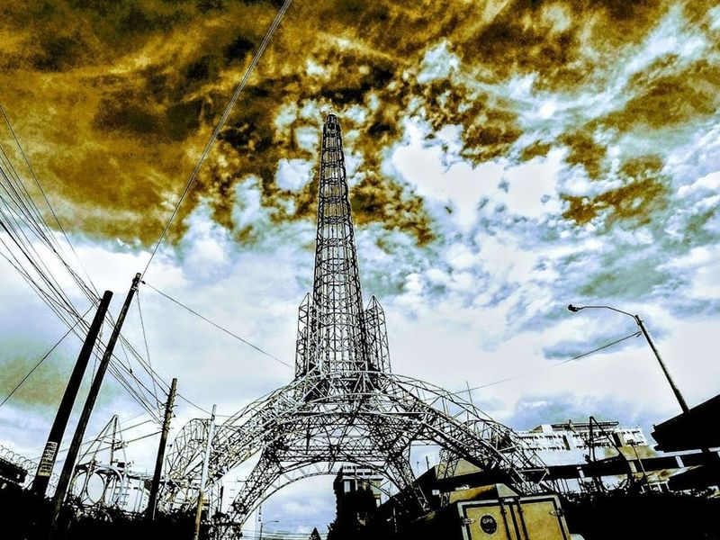
Torre del Reformador
The Torre del Reformador, a 71.85-meter steel tower located in Zone 9 of Guatemala, was built in 1935 to honor former President Justo Rufino Barrios. Resembling the Eiffel Tower, it commemorates Barrios' successful social reforms and originally featured a bell on top, later replaced with a beacon. Visitors can marvel at the towering structure and take selfies near it for unique photo opportunities.
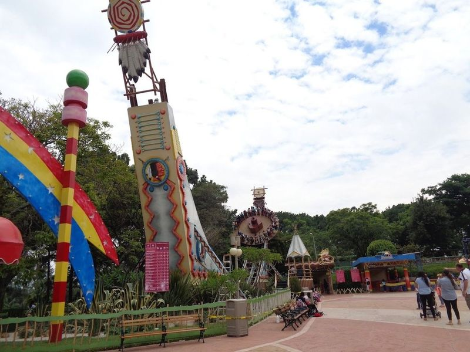
IRTRA Mundo Petapa
Nestled in the heart of Guatemala City, IRTRA Mundo Petapa is a amusement park that promises an day for families and thrill-seekers alike. Spanning over 11 hectares, this lively destination offers a delightful mix of attractions, from exhilarating rides like The Frisby and The Magic Bike to charming spots such as a mini-zoo and arcade games. Visitors can enjoy leisurely strolls through beautifully maintained parks while savoring tasty snacks along the way.
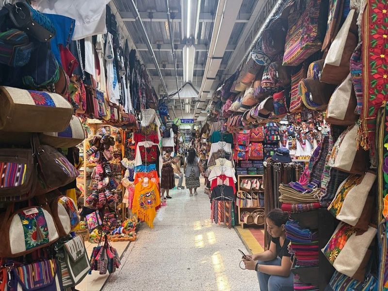
Mercado Central
Nestled in the heart of Guatemala City, Mercado Central is a and bustling market offering an authentic immersion into Guatemalan culture. The labyrinthine stalls are filled with a colorful array of textiles, handicrafts, fresh produce, and local delicacies. Visitors can expect warm hospitality from the vendors as they explore this sensory delight. Whether you're a culture enthusiast, food connoisseur, or simply seeking an authentic local experience, Mercado Central appeals to all.
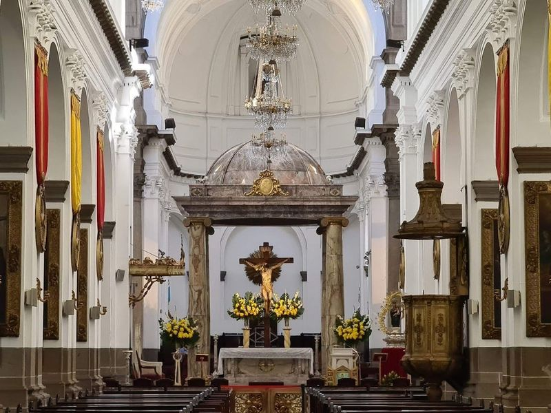
Catedral Metropolitana de Santiago de Guatemala
The Catedral Metropolitana de Santiago de Guatemala, consecrated in 1815, is a neoclassical cathedral In Guatemala City. It replaced the old Catedral de Santiago Apostol in Antigua after its destruction in an earthquake. This architectural gem stands as a rare example of colonial architecture and has withstood numerous earthquakes over the years.
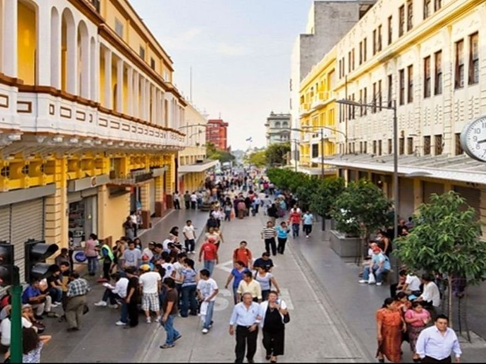
La Sexta
Nestled in the heart of Guatemala City, Rio Hostel is a haven for backpackers seeking an authentic Guatemalan experience. The hostel's decor bursts with lively colors and rustic charm, reflecting the rich cultural heritage of the country. With a variety of sleeping arrangements available, it caters to both solo adventurers and groups. Rio Hostel stands out not only for its welcoming atmosphere but also for its prime location in Zona 4, surrounded by an array of bars and restaurants.
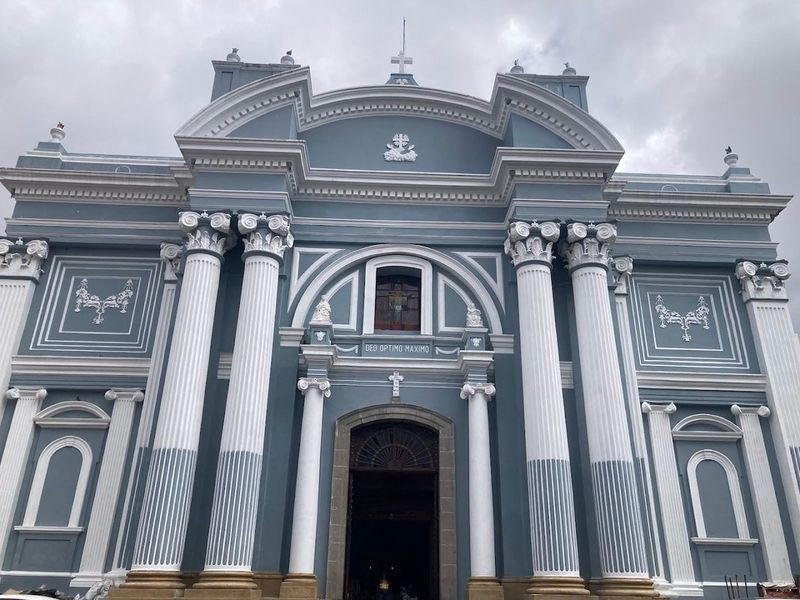
Iglesia San Francisco
Iglesia San Francisco, located in Guatemala City, is a must-visit for those interested in exploring historical churches. Dating back to 1542, this Catholic church with neo-classical design has a rich history and architectural significance. Managed by Franciscans but belonging to the Archdiocese of Santiago de Guatemala, it welcomes visitors without an admission fee and holds daily masses.
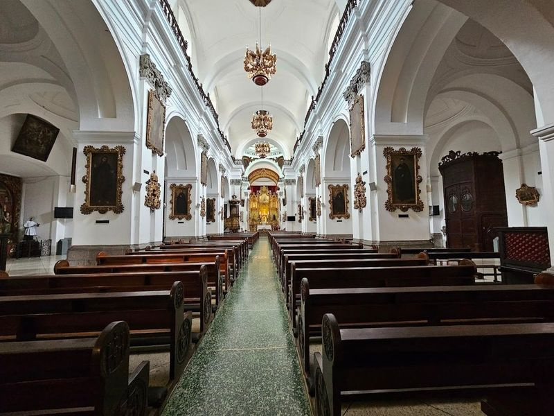
Parroquia Nuestra Señora de La Merced
Parroquia Nuestra Señora de La Merced is a yellow church with a neoclassical style, dating back to 1813. Inside, visitors can admire gold-plated Baroque altars that were originally from the La Merced church in Antigua. The church also serves as a museum, showcasing elaborate paintings, religious statues, and intricate sculptures from the 17th and 19th centuries.
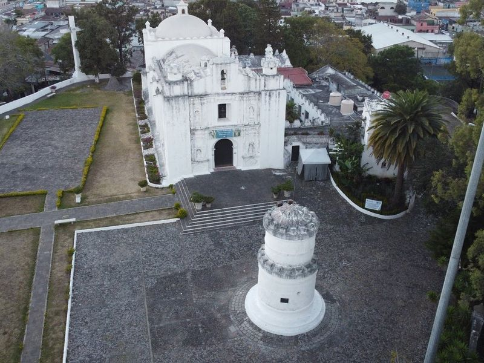
Iglesia Cerrito del Carmen
Iglesia Cerrito del Carmen, the oldest church in the city, sits atop a hill and offers a somewhat secluded yet worthwhile experience. A 30-minute walk from the city center through neighborhoods leads to this serene spot surrounded by a well-maintained park with terraces, playgrounds, and a fountain. The church provides views of Antigua and an atmosphere conducive to reflection and scenic photography.
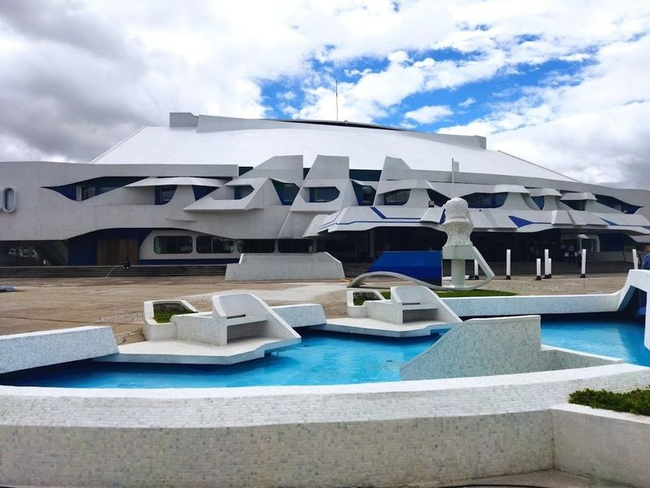
Centro Cultural Miguel Ángel Asturias
In Guatemala City, Centro Cultural Miguel Ángel Asturias is a modernist complex that stands out as impressive buildings in the country. This cultural center, named after renowned Guatemalan writer Miguel Ángel Asturias, was designed by architect Efraín Recinos and resembles a seated jaguar as a tribute to Mayan culture.